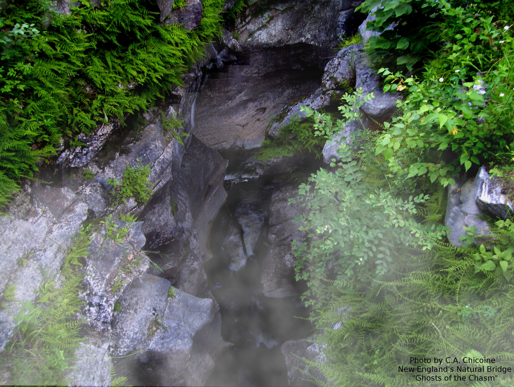

Photo by C.A. Chicoine, Ghosts in the Chasm"
This natural bridge, located in Natural Bridge State Park of North Adams, Massachusetts. This bridge is made of white marble, a feature unique to North America. The bridge spans the Hudson brook and was developed through glacial erosion. The surrounding area has historically been used for white marble mining.
Arches extracted from the Domestic and Antarctic Names (State and Topical Gazetteer) published by the United States Board on Geographic Namkes. (geonames.usgs.gov)
Data accessed August, 2018. Contours were extracted from a USGS NED 1/3 arc-second raster digital elevation model.
Arch and park data provided by wikipedia and mass.gov
Data was processed with QGIS 3.12 on Windows 10. Interactive map is hosted on CARTO.